-
19 . 10 . 25GUIDEBOOK-Puji syukur ke hadirat Allah SWT atas limpahan rahmat dan hidayah-Nya sehingga kegiatan Public Speaking Contest santri se-Darussalam dapat terlaksana dengan baik. Shalawat dan salam tercurah kepada Nabi Muhammad SAW yang telah membawa kita dari kegelapan menuju cahaya Islam. Kegiatan ini bertujuan untuk meningkatkan kemampuan berbicara di depan umum, menumbuhkan mental percaya diri, serta melatih keberanian santri Kulliyyatu-l-Mu’allimin Al-Islamiyyah. Penyusunan Smartbook ini merupakan bagian dari upaya mendukung kelancaran kegiatan dan memberikan panduan bagi panitia selanjutnya. Kami menyadari masih ada kekurangan, namun besar harapan kami buku ini dapat menjadi panduan bermanfaat bagi generasi penerus panitia. Aamiin ya Rabbal ‘Alamiin.-
Klik gambar untuk melihat text pidato
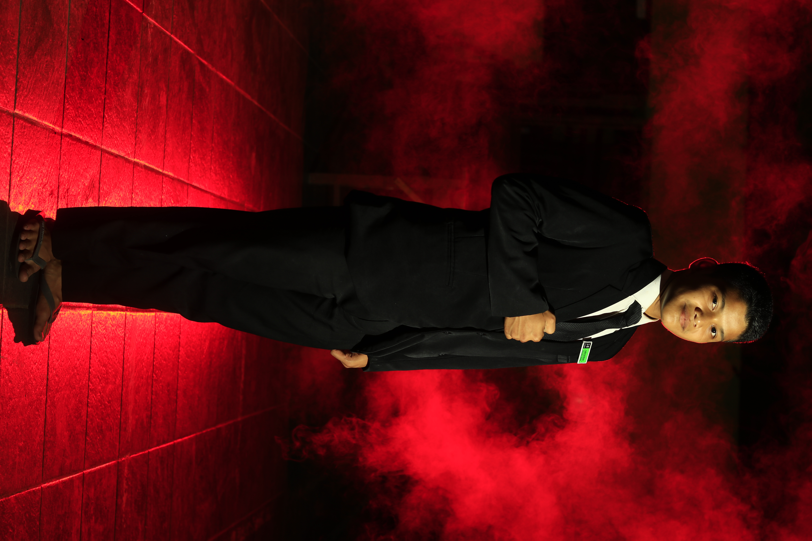
Pentingnya ShalatNama: Fadhli Dzil Ikram As Syafii
Kelas: 2-B
Bahasa: Bahasa Indonesiaبِسْمِ اللهِ الرَّحْمَنِ الرَّحِيْمِ
السَّلَامُ عَلَيْكُمْ وَرَحْمَةُ اللهِ وَبَرَكَاتُهُ.
Daun salam siap saji
Semoga yang jawab salam dapat rezeki
Sekali lagi!!السَّلَامُ عَلَيْكُمْ وَرَحْمَةُ اللهِ وَبَرَكَاتُهُ.
الْحَمْدُ لِلهِ رَبِّ الْعَالَمِيْنَ، وَبِهِ نَسْتَعِيْنَ عَلَى أُمُوْرِ الدَّنْيَا وَالدِّيْنِ، وَالصَّلَاةُ وَالسَّلَامُ عَلَى أَشْرَفِ الْأَنْبِيَاءِ وَالْمُرْسَلِيْنَ وَعَلَى اَلِهِ وَصَحْبِهِ أَجْمَعِيْنَ، أَمَّا بَعْدُ.
Yang saya hormati kepada dewan juri serta teman-teman yang saya cintai dan banggakan.
Pertama-tama dan yang paling utama, lebih utama dari pandangan pertama, marilah kita panjatkan puji serta syukur kita ke hadirat Allah SWT karena dengan nikmat-Nya kita bisa bertemu di tempat ini dengan sehat wal afiyat. Alhamdulillah.
Shalawat beserta salam senantiasa kita haturkan kepada seorang pahlawan yang tak pernah makan bakwan, seorang proklamator yang tak pernah naik motor. Kita haturkan kepada baginda Nabi besar kita, Nabi Muhammad SAW. Tak lupa kepada sahabatnya, keluarganya, dan kepada kita semua. Aamiin.
Hadirin yang saya hormati, dalam kesempatan ini saya akan membawakan tema:
“Pentingnya Shalat”
Hadirin yang saya hormati, Rasulullah SAW bersabda:
"الصَّلَاةُ عِمَادُ الدِّيْنِ فَمَنْ أَقَامَهَا فَقَدْ أَقَامَ الدِّيْنَ وَمَنْ تَرَكَهَا فَقَدْ هَدَمَ الدِّيْنَ"
“Shalat adalah tiang agama, barangsiapa yang mengerjakan shalat berarti ia menegakkan agama dan barang siapa yang meninggalkan shalat berarti meruntuhkan agama.”
Kita sebagai seorang muslim wajib melaksanakan shalat. Apabila kita sengaja meninggalkan shalat berarti kita telah melakukan dosa besar. Dosa meninggalkan shalat tidak main-main, bahkan dikatakan melebihi dosa membunuh, berzina, mencuri harta orang lain, atau meminum minuman keras.
Kita juga sebagai seorang muslim harus bisa melaksanakan shalat dengan tepat waktu. Jangan seperti ini teman-teman: gara-gara semalaman nonton bola sampai jam 2, eh tau-tau shalat subuh sampai lupa, bangun-bangun sudah waktunya shalat Dhuha, lanjut tidur sampai jam 2. Astaghfirullah.
Jama’ah oh jama’ah, manfaat shalat dalam kehidupan kita sangat penting. Mau tau atau mau tau bangettt…?
- Shalat melatih pribadi jadi baik
- Shalat mendatangkan jiwa yang tenang
- Shalat sarana curhat terbaik kepada Allah SWT
- Shalat lima waktu tepat waktu dapat menghapus dosa
- Shalat menjaga diri dari keji dan munkar
Namun pada kenyataannya, banyak orang yang mengaku Islam tetapi enggan melaksanakan shalat. Islam hanya sebagai identitas di KTP saja, maka muncullah istilah yang sangat populer yaitu: Islam KTP.
Padahal amal yang pertama dihisab pada hari kiamat adalah shalat. Jika shalat beres maka amal lainnya akan diperhitungkan, namun sebaliknya jika shalat tidak beres maka amal lainnya tidak diperhitungkan dan akan sia-sia.
Jangan seperti ini teman: shalat Subuh kesiangan, shalat Dzuhur kecapean, shalat Ashar kesorean, shalat Maghrib dalam perjalanan, shalat Isya’ ketiduran. Astaghfirullah.
“Never skip a prayer, there are millions in their graves wishing to come back to life only to prostrate to Allah just one more time.”
“Jangan pernah melewatkan shalat karena ada jutaan manusia di alam kubur yang ingin dikehidupkan kembali hanya untuk bersujud kepada Allah sekali lagi.”Ada sebuah kisah. Suatu hari dia jarang shalat ke masjid, kemudian dia pergi ke masjid, shaf-nya paling depan — lebih depan dari imam — karena dia ke masjid bukan untuk shalat tetapi sebagai jenazah yang dishalatkan.
Ingat teman-teman, hidup di dunia tidak lama, hanya sementara.
"كُلُّ نَفْسٍ ذَائِقَةُ الْمَوْتِ"
“Setiap yang berjiwa pasti akan berjumpa dengan kematian.”
Oleh karena itu, ayo jaga shalat kita, shalat tepat pada waktunya, jangan ditunda-tunda, dan jangan melalaikannya hingga meninggalkannya.
“Shalatlah Sebelum Dishalatkan.”
Demikianlah pidato dari Fadhli. Kurang lebihnya mohon dibukakan pintu maaf yang seluas-luasnya. Sebelum saya tutup, saya mau nyanyi dulu:
Sepohon kayu daunnya rimbun
Lebat bunganya serta buahnya
Walaupun hidup seribu tahun bila tak sembahyang
Apa gunanya, walaupun hidup seribu tahun bila tak sembahyang apa gunanya
Di pantai ada pohon kelapa
Di pasir banyak kura-kura
Shalat jangan sampai lupa
Agar Allah tidak murkaاُنْظُرْ مَا قَالَ وَلَا تَنْظُرْ مَنْ قَالَ
وَالسَّلَامُ عَلَيْكُمْ وَرَحْمَةُ اللهِ وَبَرَكَاتُهُ
' >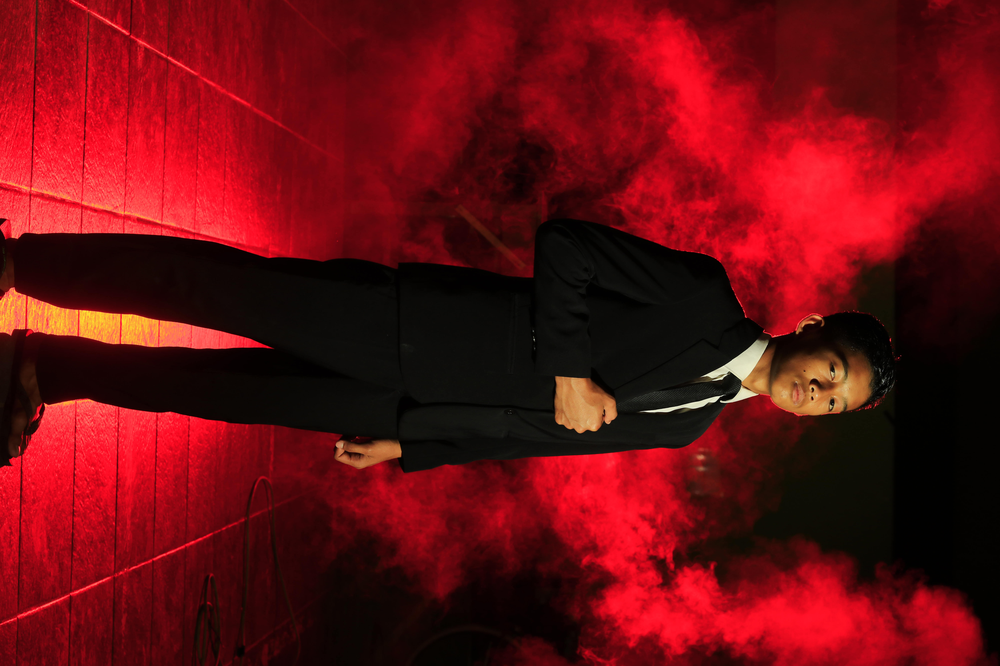
Tantangan Anak Muda Di Era DigitalNama: Muhammad Akhdan Al Adibi
Kelas: 3-B
Bahasa: Bahasa Indonesiaبِسْمِ اللهِ الرَّحْمَنِ الرَّحِيْمِ
الْحَمِدُ لِلهِ ذِيْ الْعِزَّةِ وَالتَّقْدِيْرِ وَالْمُلْكِ وَالتَّدْبِيْرِ.
أَشْهَدُ أَنْ لَا إِلَهَ إِلَّا اللهُ وَحْدَهُ لَا شَرِيْكَ لَهُ اللَّطِيْفُ الْخَبِيْرُ.
قَضَى مِنْ سُنَنِ الْحَيَاةِ وَالتَّغْيِيْرِ، صَلَّى اللهُ وَسَلَّمَ وَبَارَكَ عَلَيْهِ وَعَلَى اَلِهِ وَصَحْبِهِ وَالتَّابِعِيْنَ وَمَنْ تَبَعَهُمْ بِإِحْسَانٍ إِلَى يَوْمِ الدِّيْنِ. أَمَّا بَعْدُ.رَبَّنَا اشْرَحْ لَنَا صُدُوْرَنَا وَيَسِّرْ لَنَا أُمُوْرَنَا وَاهْلُلْ عَقْدَةً مِنْ لِسَانِنَا يَفْقَهُ أَقْوَالَنَا.
السَّلَامُ عَلَيْكُمْ وَرَحْمَةُ اللهِ وَبَرَكَاتُهُ.
Yang saya hormati para hadirin, guru-guru, dan tentunya teman-teman muda harapan bangsa yang masih kuat begadang tapi lemah kalau disuruh bangun subuh.
Pertama-tama, mari kita panjatkan puja dan puji syukur ke hadirat Allah SWT, karena atas rahmat-Nya kita masih bisa berkumpul dalam keadaan sehat, bahagia, dan tentunya punya kuota internet 😆
Teman-teman yang saya banggakan,
Kita hidup di era digital. Semua serba cepat, serba online, dan serba scroll sampai lupa waktu. Dulu kalau mau tahu kabar teman, kita datang ke rumahnya. Sekarang? Cukup stalking story-nya 5 menit langsung tahu dia lagi galau, ngopi, atau putus cinta ke-15 kalinya 😅Tapi jangan salah, di balik kemudahan era digital, tersembunyi tantangan besar bagi kita sebagai anak muda. Dan ini bukan tantangan receh kayak ngoding HTML sambil dengerin lagu galau, tapi tantangan yang bisa menentukan masa depan kita.
1. Kecanduan Media Sosial
Pernah nggak buka HP cuma mau balas chat, tapi ujung-ujungnya malah scroll TikTok sampai dua jam lewat? Ini yang disebut Digital Distraction.
Dalam Islam, kita diajarkan untuk menggunakan waktu dengan bijak. Allah SWT berfirman:
وَالْعَصْرِ، إِنَّ الْإِنْسَانَ لَفِيْ خُسْرٍ، إِلَّا الَّذِيْنَ آمَنُوْا وَعَمِلُوْا الصَّالِحَاتِ وَتَوَاصَوْا بِالْحَقِّ وَتَوَاصَوْا بِالصَّبْرِ
“Demi masa, sesungguhnya manusia benar-benar dalam kerugian kecuali orang-orang yang beriman dan mengerjakan amal saleh…” (Q.S. Al-Ashr: 1–3)Kalau waktu kita habis hanya untuk scrolling dan bukan hal produktif, jangan-jangan kita masuk golongan yang rugi. Dan parahnya, rugi dalam diam — tahu-tahu malam, tugas belum selesai, hidup makin galau 😅
2. Budaya Instan dan Malas Berproses
Era digital bikin semua terasa cepat. Mau makan? Tinggal klik. Mau nonton? Tinggal play. Tapi sayangnya, banyak yang juga pengen sukses instan.
Baru mulai jualan online tiga hari, belum laku, langsung bilang, “Kayaknya aku ditakdirkan bukan jadi pebisnis deh.” 😆
Sukses itu butuh proses! Bahkan Nabi Muhammad SAW, sosok paling mulia, berdakwah 23 tahun — bukan 23 jam langsung viral!
3. Krisis Identitas dan Konten Toxic
Banyak anak muda bingung jati dirinya karena terlalu banyak perbandingan di media sosial. Lihat teman jalan-jalan ke Bali, langsung insecure. Padahal dia posting di Bali, kamu nonton sambil makan mie di kamar — sama-sama bahagia, kan? 😋
Rasulullah SAW bersabda:
“Barangsiapa yang menyertai suatu kaum, maka ia termasuk dari mereka.” (HR. Abu Dawud)Kita harus hati-hati memilih panutan di dunia digital. Jangan sampai lebih kenal selebgram daripada tokoh-tokoh hebat Islam. Jangan sampai lebih hafal drama Korea daripada hafalan Qur’an (ups, maaf yang nonton drama sambil ngaji 😅).
4. Kurangnya Etika Digital
Coba deh baca kolom komentar di media sosial — banyak yang isinya gugatan, caci maki, bahkan fitnah. Padahal jari ini akan dimintai pertanggungjawaban.
Rasulullah SAW bersabda:
“Barangsiapa yang beriman kepada Allah dan hari akhir, hendaklah ia berkata baik atau diam.” (HR. Bukhari dan Muslim)Jangan sampai jari-jari kita yang gesit mengetik komentar pedas, malah membawa kita ke tempat yang panas. Astaghfirullah 🔥
Teman-teman, era digital bukan musuh. Tapi kita harus jadi pilot, bukan penumpang. Kendalikan teknologi, jangan dikendalikan. Gunakan media sosial untuk belajar, berkarya, berdakwah, dan menyebarkan hal-hal positif.
Biar nanti pas ditanya malaikat: “Waktumu di dunia kau habiskan untuk apa?” kita bisa jawab: “Bikin konten dakwah dan jualan online halal, malaikat!” 😎
Mari kita bersama-sama menjadi anak muda yang melek digital, kuat iman, dan tidak baperan. Karena tantangan ke depan makin berat, dan bangsa ini butuh generasi yang kuat — bukan yang rebahan terus berharap jadi sultan 💪
وَالسَّلَامُ عَلَيْكُمْ وَرَحْمَةُ اللهِ وَبَرَكَاتُهُ
' >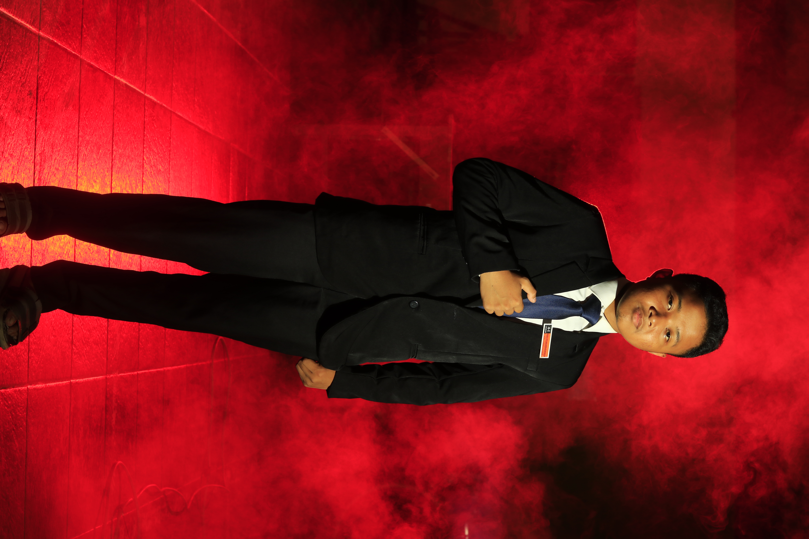
To Contribution For Better FutureName: Muh Aidil A Lamakkulawuzar
Class: 4-I
Language: English Languageرَبِّ اشْرَحْ لِيْ صَدْرِيْ وَ يَسِّرْ لِيْ أَمْرِيْ وَاهْلُلْ عُقْدَةً مِنْ لِسَانِيْ يَفِقَهُ قَوْلِيْ
سُبْحَانَكَ لَا عِلْمَنَا إِلَّا مَا عَلَّمْتَنَا إِنَّكَ أَنْتَ الْعَلِيْمُ الْحَكِيْمُFirst: All praises be to Allah, the Most Beneficent and the Most Merciful who has created us, the Lord of the world, the Lord of the universe. With His blessing we can live in this universe.
Second: Peace and salutation be upon The Last Prophet Muhammad SAW, who has brought us from darkness to light, from stupidity to cleverness.
We are the Ummah of Prophet Muhammad, we are Muslims — so answer my greeting with the greeting of Islam.
بِسْمِ اللهِ الرَّحْمَنِ الرَّحِيْمِ
السَّلَامُ عَلَيْكُمْ وَرَحْمَةُ اللهِ وَبَرَكَاتُهُGood night everybody! I hope all of you feel happy and joyous tonight! You who think that life hath nought to do with innocent laughter that can harm no one, clap to the leaves and go no farther than this, for I tell you plainly that if you go farther, you will be scandalized by seeing good.
My standing here is not like a person who just talks nonsense and can’t do anything, and not like a statue that can only be silent. But my establishment here will bring a little topic, that is very interesting and of course very important for young teenagers, which title is: “To Contribution for Better Future.”
Okay, let’s start by talking: “About why do people study in college?”
College is a place where students can learn more and gain new knowledge and experience. Of course, different people have different reasons to study in college. For example, some people want to continue their studies after graduation, some hope to find a good job, and others want preparation for future life.
First of all, students can learn new knowledge and experiences in college. There are many teachers and professors with abundant teaching experience who teach students lots of new knowledge and help them solve problems in their studies. With their help, students learn useful basic and professional knowledge which is very helpful for their future work.
Secondly, students can learn how to manage their time reasonably. Before college, life was often arranged by parents and study by teachers. In college, they must arrange their own life and study. They decide when to get up, when to do sports, and when to finish assignments. This is an important experience for their future life.
Studying in college also gives students the opportunity to live with others and learn cooperation. At first, living with strangers may feel uncomfortable because of differences in habits or personalities, but over time they learn how to care for and understand others. It’s great preparation for life in society.
All in all, students not only learn from books but also gain life experience — how to manage time, cooperate with people, and prepare for the real world.
Street Knowledge vs Book Knowledge
People are always learning and practicing throughout their lives. From reading words in textbooks such as “toy”, “car”, or “train”, people get concepts — but only by playing, riding, or driving them do they understand the real meaning.
Education (books) and experience are the main two channels for knowledge. Each plays different roles. In my opinion, knowledge from experience is more important than that from books.
Experience can prove whether knowledge from books is true or false. Textbooks teach essential principles and theories — but people can only understand their real meaning through practice. Long ago, books said the Earth was flat, but scientists proved that wrong through observation.
Experience-based knowledge also improves the world. Books have limitations — they only teach what was known in the past. But inventions like the Internet or e-business came from practice, not from old books. The truth comes from practice and experience; people keep discovering new things and verifying knowledge.
I feel that tonight is the starting time to speak in front of you, and I believe that from small things we can create big things 🌟
أَقُوْلُ قَوْلِيْ هَذَا
وَالسَّلَامُ عَلَيْكُمْ وَرَحْمَةُ اللهِ وَبَرَكَاتُهُThe verse:
' >
يَرْفَعُ اللهُ الَّذِيْنَ آمَنُوْا مِنْكُمْ وَالَّذِيْنَ أُوْتُوا الْعِلْمَ دَرَجَاتٍ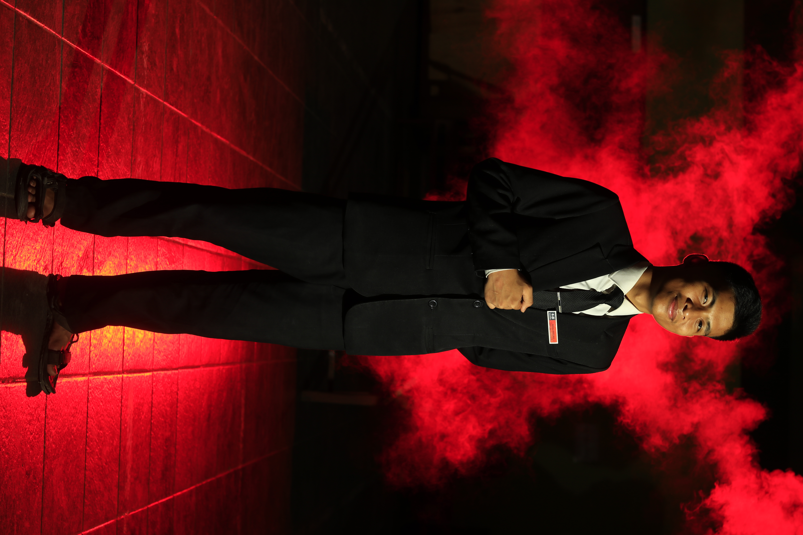
The Real SuperheroesName: Muhammad Rendy Hamzano
Class: 4-B
Language: English LanguageYou’ve been fighting for it all your life, you’ve been working for him day and night. That’s how a superhero learns to fly, every day every hour, turn that pain into power.
بِسْمِ اللهِ الرَّحْمَنِ الرَّحِيْمِ
السَّلَامُ عَلَيْكُمْ وَرَحْمَةُ اللهِ وَبَرَكَاتُهُThere is not even a single word that has more rights to be spoken except thankfulness and gratefulness to Allah SWT, the Most Caring and Merciful, the Most Mighty and Powerful, who has given us so many blessings until we can gather in this beautiful night. Sholawat and salam to our Prophet Muhammad SAW, who brought humanity from darkness to the light of Islam we feel today.
And I, standing in front of you all, am here to deliver a simple yet meaningful speech under the title: The Real Superheroes.
When we hear the word “Superhero”, what comes to mind? Maybe Spiderman, Superman, or The Flash... But when I hear that word, I think of someone else — two familiar people I’ve known since childhood: my parents. A strong man who works day and night so I can eat, and a wonderful woman who sacrifices everything just to see me happy.
They might not fly like Superman or run like The Flash, but they have something no superhero has — sacrifice. Allah SWT even reminded us in the Qur’an:
وَ قَضَى رَبُّكَ اَلَّا تَعْبُدُو اِلَّا اِيَّاهُ وَ بِالوَالِدَينِ اِحْسَانَا ... (الإسراء: 11)
Allah commanded us to act kindly to our parents, forbidding us even from saying “ah” to them. That’s how big their value is before Allah.
But sadly, many kids nowadays forget this. They yell at their mothers just because of a simple request. “Mom! I’m playing! Can’t you do it yourself?” Where is their respect?
When our mothers gave birth, did they say “I can’t do this”? No. They endured every pain to bring us into the world. That’s how great their sacrifice is.
So, my dear friends, from now on — respect your parents. Call your mother, apologize if you’ve ever made her sad. Thank your father for his hard work. Because they are the real superheroes — without capes or masks, but full of love and strength.
Time passed by and it’s time for our goodbye. That’s all I could deliver tonight. Take the morals, live the lessons, and may it be useful for our lives. Thanks for listening.
والسَّلَامُ عَلَيْكُمْ وَرَحْمَةُ اللهِ وَبَرَكَاتُهُ
' >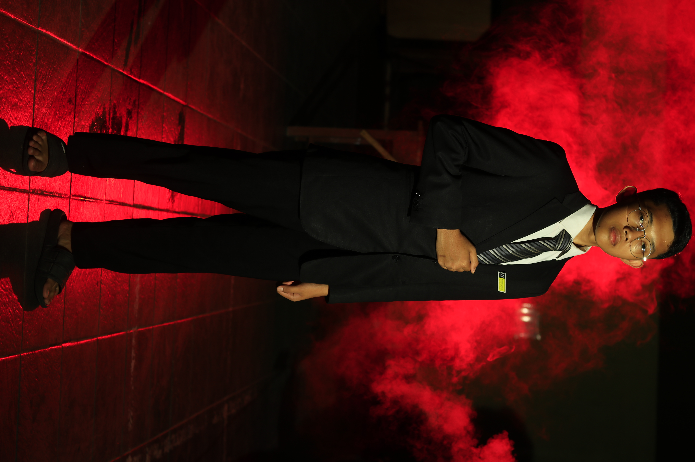
Knowledge For A Bright FutureName: Muhammad Jalaludin Abdurahman
Class: 5-R
Language: English LanguageYour prayers are your light. Your devotion is your strength. Sleep is the enemy of both. Your life is the opportunity that life can give to you. If you ignore your life, if you waste your life, you will turn to dust.
The honorable senior teacher,
The honorable judges,
The honorable master of ceremony,
And last but not least, all of you audience that are here tonight.بِسْمِ اللهِ الرَّحْمَنِ الرَّحِيْمِ
السَّلَامُ عَلَيْكُمْ وَرَحْمَةُ اللهِ وَبَرَكَاتُهُI’m strong like an eagle, not weak like a bubble. If you don’t believe me, take a bottle! But I’m not like Doctor Strange who can control time, and I’m not like Superman who can fly, and I’m not like the best man who never lies. But I am Muhammad Jalaludin Abdurrahman from class Five-R.
I’m standing in front of you all to give you a speech under the title: Knowledge For A Bright Future.
Brothers, we all know that knowledge in this world is very important. Knowledge is everything. For a civilization to improve, humans must have knowledge. Knowledge is a simple thing that can have a huge impact on this world. That’s why leaders, directors, and even dictators must have knowledge to rule the world.
Here in Gontor, we as students come to seek knowledge — but Gontor doesn’t just offer knowledge, it offers life lessons, life skills, and language. These three things are essential for us.
First, Language: Language is crucial for humans to communicate. With language, we can understand each other. Gontor offers us two basic languages: Arabic and English. English is the international language of the world, while Arabic is the language of religion. With Arabic, we can understand the Qur’an and Hadith.
Second, Life Lessons: Lessons that we don’t learn in class — facing problems, building character, respecting others, and being a teacher. Gontor’s curriculum is ITTC (Islamic Teacher Training College), focusing on building teachers who have both knowledge and religion.
As one of the three founding fathers said:
“Be an Ulama intellect, not an intellect that knows religion.”Third, Life Skills: Gontor gives us a key — a key that can open any door of wisdom and knowledge. From clubs, courses, scouting, handicrafts, singing, band, and more. The question is, “Do you want to use that key or not?”
What are you going to do with the key of yours — use it, or waste it?
We still have a long journey ahead, and to face it, we need skills. We are still young, and the word “late” is not in our dictionary. Remember, “It’s never too old to learn.” Even the oldest man can still study.
Maybe what we do now seems small, but everything big starts small — like a drop of water making a hole in a rock. That’s how consistency builds success.
We must also find what we love to do, so we can enjoy our efforts without pressure. And if things don’t go as planned, don’t be sad — because Allah always gives the best decision for us.
As stated in the Qur’an:
فَلَوْ شَاءَ لَهَدَ لَكُمْ أَجْمَعِيْنَ
“If He has decided something, He will show you the right path.”Now, in this modern era with fast-growing technology and artificial intelligence that can even surpass human intelligence — if we don’t study, if we don’t seek knowledge now, we’ll be left behind by our own creation.
Sadly, many youths today no longer read books — the very source of knowledge. Books are pages filled with wisdom from the past. If we stop reading, we stop passing knowledge to the next generation.
We must not only think for ourselves but for others — because humans are social beings. We must cherish the knowledge we have and pass it down.
So, let’s start from ourselves — for our future, for humankind’s future. Remember, “What we do now will have an impact on our future.”
If we study now, Insya Allah we will succeed. We do our best, and the rest is in Allah’s hands.
As Nelson Mandela said:
“Knowledge is the most powerful weapon that you can use to change the world.”With that, I end my speech. I’m very sorry if I’ve said something wrong. I hope we can all take a lesson from it.
وَالسَّلَامُ عَلَيْكُمْ وَرَحْمَةُ اللهِ وَبَرَكَاتُهُ
' >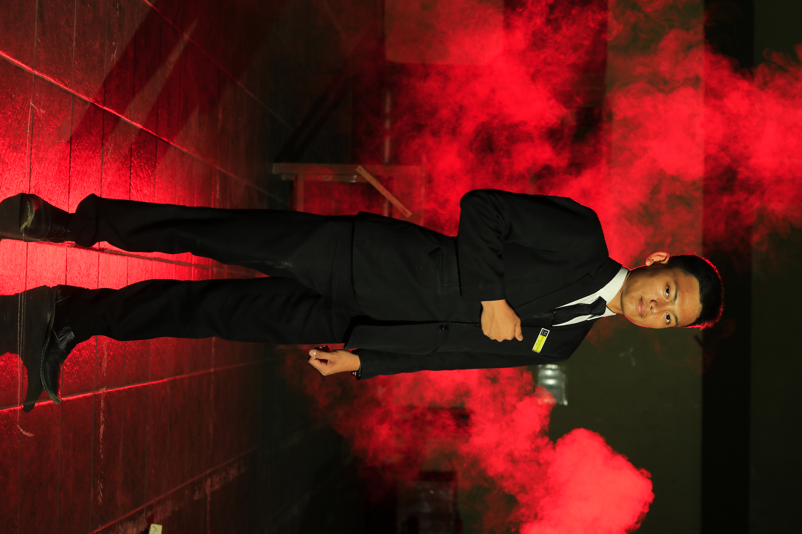
It’s Now or NeverName: Mohandist Rifal Radani
Class: 5-C
Language: English LanguageI’m not Superman who can fly in the sky.
I’m not Dr. Strange who can manage the time.
But I’m Mohandist Rifal who wants to say to you:السَّلَامُ عَلَيْكُمْ وَرَحْمَةُ اللهِ وَبَرَكَاتُهُ
الْحَمْدُ لِلهِ الَّذِيْ قَدْ جَعَلَ الْأَرْضَ فِرَاشًا وَالسَّمَاءَ بِنَاءَهُ وَالَّذِيْ قَدْ خَلَقَ النَّاسَ لِيَكُوْنَ خَلِيْفَةً فِيْ الْأَرْضِ الْمُكَرَّمَةِ
All praises and thanks be to Allah SWT, who still gives us the chance of time and health — the Lord of the worlds, the Master of the Day After, and the Creator of everything in this universe. He has no partner.
Never forgotten, sholawat and salam are always given to our Majesty, the Chief of Muslims, the closer of prophets, and the diamond of Madinah — our Great Prophet Muhammad (peace be upon him) who has brought us from darkness to light, from Jahiliyyah to Islamiyyah, from stupidity to wisdom.
I stand before you all to deliver my speech under the theme: “It’s Now or Never”
My friend, on the good way… God has made humans not for nothing except to worship Him. Everyone among us cannot escape death. The older we get, the less time we have left. Therefore, make the best use of your time, because life is not a game with checkpoints — it’s real life that cannot be repeated.
So you are lucky today, because I’ll show you three tips and tricks about the habits of a rich man!
1. Reading
Books are the window to the world. By reading, we can explore the entire world — but sadly, only 30% of people on Earth enjoy reading books. Reading is not just about lessons in school — it can be from encyclopedias, comics, self-improvement books, or even novels that give us experience and entertainment.
That’s why the first command from Allah was:
"اِقْرَأْ بِسْمِ رَبِّكَ الَّذِيْ خَلَقَ"
(“Read in the name of your Lord who created.” – Q.S. Al-‘Alaq: 1)This shows that all of us are obligated to read. But be mindful — reading a book trains focus and understanding, while scrolling social media like TikTok or Instagram only wastes your focus without truly learning anything.
2. Writing
If you only read, you are just thinking what others think. So, express your own thoughts by writing. Writing refreshes the mind and sharpens the brain. You don’t need to write a novel — just write your daily experiences.
“If you’re not the king’s son, and not the son of a minister, then write.”
— Imam Al-GhazaliDon’t say “I’m too busy”, “I’m lazy”, or “I have no time”. That’s not true — it’s because you haven’t practiced the third tip from me!
3. Time Management
No successful person exists who can’t manage their time. In this digital era, managing time is not just about what’s important and not — it’s about what’s important and what’s more important.
"تَنْظِيْمُ الْعَمَلِ يُوَفِّرُ نِصْفَ الْوَقْتِ"
(Organizing work saves half of your time.)Take Elon Musk as an example. He became one of the richest men because he plans his day every morning and schedules everything precisely. Tidy up your tasks — know when you have free time and when you don’t.
Everyone wants success — a dream house, wealth, happiness — but realize it, my friend: life is a competition, and only the winners get the prize. The early bird gets the worm!
I believe 70% of you in this hall will forget my words after you leave, but 30% will remember, write it down, and act upon it. Be among that 30%! Aamiin Ya Rabbal ‘Aalamin.
So come on, man! What time are you waiting for again? From this second, be different from before! It’s now or never — now or never to read your books, to write your thoughts, to manage your time. It’s Now or Never!
That’s all for my speech “It’s Now or Never”. I hope it will be useful for all of us. I apologize for any mistakes, for no one is perfect except Allah SWT.
Travel to Jakarta, don’t forget to watch ondel-ondel!
Thank you so much, my friends. Answer my salam with a smile 😄وَالسَّلَامُ عَلَيْكُمْ وَرَحْمَةُ اللهِ وَبَرَكَاتُهُ
' >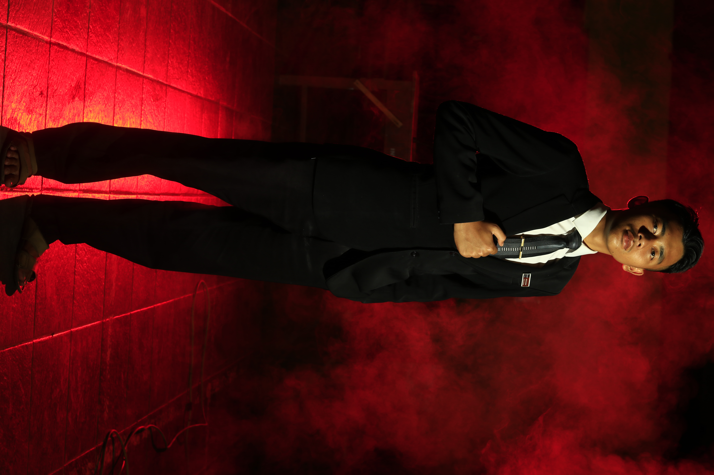
نُرْشِدُ الْأُمَّةِ وَنُسَيِّدُ دَعَائِمَ الْعِزَّةِالاسم: عبد العزيز جيلاني
الفصل: الثالث التكثيف D
اللّغة: العربيّةأَيُّهَا الْمُسْلِمُوْنَ السَّالِمُوْنَ، لَوْ سَلَّمَ الْمُسْلِمُ عَلَى الْمُسْلِمِ سَلَامًا فَتَسَلَّمَ لِمَا سَلَامَةِ سَلَامًا، كَمَا تَسَلَّمَ سَلَمًا وَسَلِمَ سِلْمٍ مِنْ رَبِّ دَارِ السَّلَامِ. وَسَلَّمَ اسْتَسْلَمَ الَّذِيْ جَاءَ بِهِ صَلَاةً وَسَلَامًا، وَإِذَا سَتُلْقِيْ عَنِ السَّلَامِ فَلَا السَّلَامَ إِلَّا هَذَا السَّلَامِ.
السَّلَامُ عَلَيْكُمْ وَرَحْمَةُ اللهِ وَبَرَكَاتُهُ
الْحَمْدُ لِلهِ الَّذِيْ جَعَلَ دَوْلَةَ إِنْدُوْنِيْسِيَّةَ مُسْتَقَلَةً، وَبِفَنِجَسِلَ فَلْسَفَةً وَبِأُنْدًا أُنْدًا أَسَاسَةً، وَمِنْ سَبَنْقْ إِلَى مَرَوْكِ فَوْقَ خَطِّ الِاسْتِوَاءِ، وَيُسَمَّى بِغَارِسْ كَتُلِسْتِوَ، وَبِالطَّائِرِ غَرُدَ فَنِجَسِلَ، وَبِالْكِتَابَةِ عَلَى رِجْلَيْهِ بِيْنِكَ تُنْغَلْ إِيْكَ، وَبِالصُّوْرَةِ فِيْهَا وَبِلَاغِبٍ هَذَا الْبِلَادِ زَمْرُدْ كَتُلِسْتِوَاءِ.
إِنَّ الأُمَّةَ تَمُرُّ بِتَحْدِيَاتٍ جِسَامٍ وَظُلُمَاتٍ مُتَرَاكِبَةٍ، وَإِذَا أَرَدْنَا أَنْ نُسَيِّدَ دَعَائِمَ الْعِزَّةِ فَعَلَيْنَا أَنْ نَعُوْدَ إِلَى اللهِ تَعَالَى، وَإِلَى الْقُرْآنِ الْكَرِيْمِ، وَإِلَى سُنَّةِ النَّبِيِّ صَلَّى اللهُ عَلَيْهِ وَسَلَّمَ.
وَاللهُ عَزَّ وَجَلَّ يَقُوْلُ: "وَلِلهِ وَلِرَسُوْلِهِ وَلِلْمُؤْمِنِيْنَ"، فَلَا عِزَّةَ إِلَّا بِالطَّاعَةِ، وَلَا كَرَامَةَ إِلَّا بِالْإِيْمَانِ، وَلَا نَصْرَ إِلَّا بِالصِّدْقِ وَالْإِخْلَاصِ.
فَكُوْنُوْا مُرْشِدِيْنَ بَاغِلِيْنَ بِالْخَيْرِ لِلنُّصْحِ، حَارِصِيْنَ عَلَى عِزَّةِ الْأُمَّةِ. إِنَّ إِرْشَادَ الْأُمَّةِ لَا يَعْنِي الْكَلِمَةَ فَقَطْ، بَلْ هُوَ مَشْرُوْعُ وَعْيٍ، وَمَشْرُوْعُ تَعْلِيْمٍ، وَمَشْرُوْعُ إِصْلَاحٍ.
فِيْ ذَالِكَ رِضَى اللهِ وَنَجَاةِ الْأُمَّةِ، وَتُبْنَى عَلَى سَوَاعِدِ الصَّادِقِيْنَ وَعُقُوْلِ الْمُخْلِصِيْنَ وَقُلُوْبٍ لَا تَعْرِفُ الْعَجْزَ. لِأَنَّ دِيْنَ الْإِسْلَامِ هُوَ دِيْنُ الْحَقِّ، دِيْنٌ جَاءَ لِيُخْرِجَ النَّاسَ مِنَ الظُّلُمَاتِ إِلَى النُّوْرِ، مِنَ الْجَهْلِ إِلَى الْعِلْمِ، وَمِنَ الظُّلْمِ إِلَى الْعَدْلِ.
قَالَ اللهُ تَعَالَى فِي الْقُرْآنِ الْكَرِيْمِ: "إِنَّ الْإِسْلَامَ لَيْسَ دِيْنًا لِزَمَانٍ دُوْنَ زَمَانٍ وَلَا قَوْمٍ دُوْنَ قَوْمٍ، بَلْ هُوَ دِيْنٌ عَالَمِيٌّ جَاءَ لِكُلِّ الْبَشَرِيَّةِ، جَاءَ بِالرَّحْمَةِ وَالْمَحَبَّةِ وَالْعَدْلِ وَالسَّلَامِ."
فَسَيِّدُنَا مُحَمَّدٌ صَلَّى اللهُ عَلَيْهِ وَسَلَّمَ جَاءَ لِيُعَلِّمَ الْبَشَرَ كَيْفَ يَعِيْشُوْنَ بِسَلَامٍ وَتَعَاوُنٍ، وَلَيْسَ بِحَرْبٍ وَعُدْوَانٍ.
وَمَنْ تَأَمَّلَ تَارِيْخَ الْإِسْلَامِ وَجَدَ أَنَّهُ دَائِماً دِيْناً يَرْفَعُ الْإِنْسَانَ وَيُكْرِمُهُ، وَلَا يُهِينُ أَحَدًا. فَلَا يَكْفِيْ أَنْ نَقُوْلَ "نَحْنُ مُسْلِمُوْنَ"، بَلْ يَجِبُ أَنْ نُظْهِرَ جَمَالَ الْإِنْسَانِ فِي أَخْلَاقِنَا وَسُلُوْكِنَا وَكَلِمَاتِنَا، لِتَفُوْقَ أُمَّتُنَا نَحْوَ مَجْدٍ وَجَدِيْدٍ.
شُكْرًا، هَذَا مِنِّي.
' >
وَالسَّلَامُ عَلَيْكُمْ وَرَحْمَةُ اللهِ وَبَرَكَاتُهُ.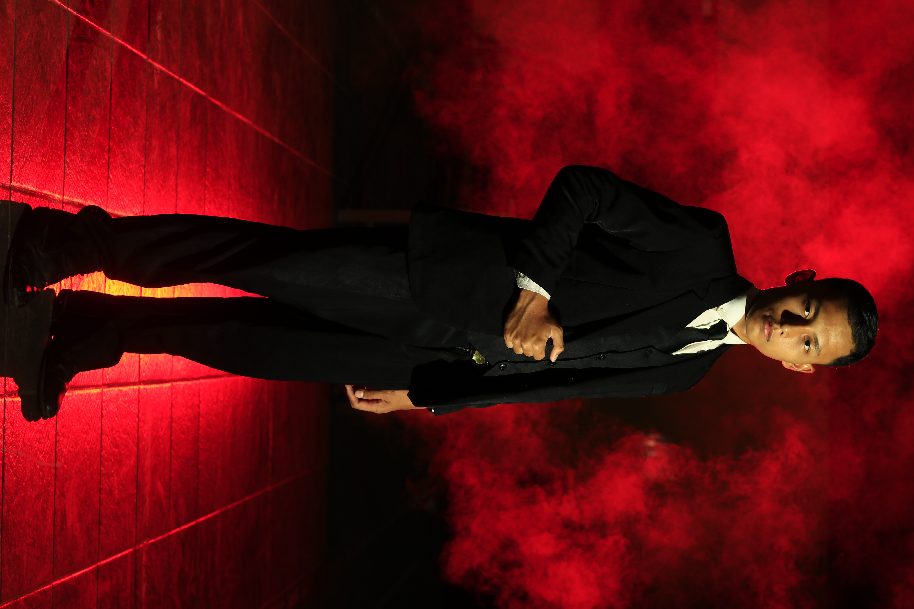
الاسم : فراس سيف الله رحمن
الفصل : 4-F
اللّغة : اللّغة العربيّة
طلب العلمأبدأ الخطابة باللّغة العربيّة، وقيامي هنا له المنفعة، و قيامي هنا بالنّيّة الصّالحة، فاسمعوا كلامي بحسن السّماعة، من أراد الدّنيا فعليه بالعلم، من أراد الآخرة فعليه بالعلم، من أراد هما فعليه بالعلم، فلذلك تعلّموا بالجدّ.
أوّل ما أستفتح في إراد جريشين وردّ عن النّبيّ صلّى الله عليه وسلّم وكان قدره عظيما ونسابه كريما وصراطه مستقيما. قال في حقّه: "من لم يزل سميعاعليما إنّ الله وملائكته يصلّون على النّبيّ ياأيّها الّذين آمنوا صلّوا عليه وسلّموا تسليما". يا من اجتمعتم على مائدة العلم والإيمان وسعيتم إلى نيل الفضل والإحسان وتعلّمتم جزاء الجنان.
أحيّكم تحيّة الإسلام، السّلام عليكم ورحمة الله وبركاته.
الحمد لله الّذي فضّل بني آدم بالعلم والعمل، ثمّ الصّلاة والسّلام على خير البشر محمّد صلّى الله عليه وسلّم، أمّا بعده.
ذات يوم أتت امرأة إلى حفّار القبر ثمّ سألته بأن يصنع القبر للولد ثمّ حين أدخل حفّار القبر الميّت رأى بستان الجنّة أمامه فتعجّب، ثمّ سأل إلى امرأة، "ما عمله في حياته؟" فقالت امرأة، "هو طالب العلم." ثمّ بعد أيّام أتت امرأة إلى حفّار القبر لمرّة ثانية وحين أدخل الميّت رأى بستان الجنّة لمرّة ثانية ثمّ سأل إلى امرأة، "ما عمله في حياته؟" فقالت، "هو عامل الّذي يعطي النّفكة إلى طالب العلم الّذي ماب قبله"، ثمّ ترك حفّار القبر عمله ثمّ يتعلّم عن الدّين الإسلاميّ وكان عمره خمسين سنة ثمّ يكون علماء في زمانه. أحبّئي في الله، الاستنباط من هذه الحكاية: أنّ رفع الله طالب العلم ومن يعطي النّفكة إلى من يجاهد في سبيل الله.
كما قال الله تعالى في القرآن الكريم: "يرفع الله الّذين آمنوا منكم والّذين أوتوا العلم درجات" (سورة المجادلة: 11) وقال رسول الله صلّى الله عليه وسلّم: "من جاهد غازيا فقد غزا وكان طالب العلم وغازيا هما على سواء، هما في سبيل الله. كما قال رسول الله صلّى الله عليه وسلّم: "من خرج في طلب العلم كان في سبيل الله حتّى يرجع".
ثمّ قال إمام سيوطيّ: "الصّدقة لهل سبع طبقات والطّابق الأعلى هي الصّدقة إلى أهل العلم أي علماء أي أهل الفقه ثمّ قال رسول الله صلّى الله عليه وسلّم: "فضل العالم على العابد كفضلي على من أدناكم". المراض من هذا الحديث ليس الاختقار على العابد (أهل العبادة) بل يبيّننا أنّ العالم أفضل من العابد. ولكن لماذا؟ لأنّ العالم (أهل العلم) يستطيع أن يعلّم علمه إلى الآخرين، وكان العابد يعبد الله فقط لنفسه. فلذلك العالم أفضل من العابد، كما قال في كتاب أصول الفقه خير متأدّي أفضل من القاصر ثمّ في كتاب تعليم المتعلّم للإمام الزّرنوجي، مكتوب أنّ تأليف ذلك الكتاب قال أنّه رأى في زماننا كثيرا من طلّاب العلم في زماننا يجدّون إلى العلم ولا يصلون من منافعه وثمراته وهي العمل به. لأنّ أخطؤوا طريقه ونيّته والنّيّة الصّحيحة للعلم رضاء الله والدّار الآخرة وإزالة الجهل عن نفسه وسائر الجاهل وإبقاء الإسلام.
قال الإمام غزالي:
"التّعلّم يستطيع أن يكون دنب عظيم لأنّ التّكبّر والرياء، ثمّ قال رسول الله صلّى الله عليه وسلّم: "أقرب النّاس من درجة النّبوّة أهل الجهاد وأهل العلم أمّا أهل العلم فلأنّهم قد دلّوا النّاس على ما جاءت به الرّسل وأمّا أهل الجهاد فجاهدوا بأسيافهم على ما جاءت به الرّسل.ثمّ الآخير منّي، أنا لست من الوهبي الّذي يكفّر كلّ بتعة ما ولكنّي فقط عبد ظالم لا أملك لي ضرّا ولا نقعا ولا حباتا ولا موتا ولا نشورا لأنّ إنّا لله وإنّا إليه راجعون.
والسّلام عليكم ورحمة الله وبركاته.
' >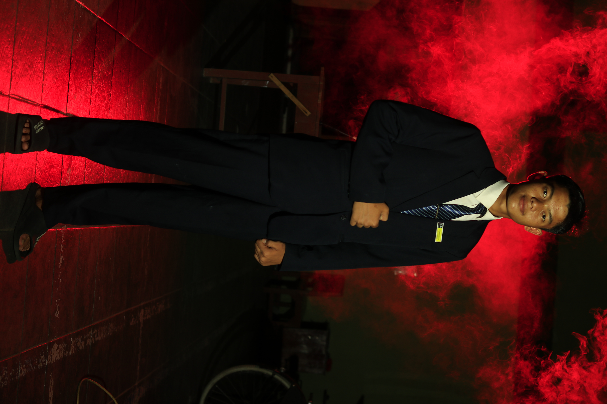
الاسم : محمّد حاكم
الفصل : 5-D
اللّغة : اللّغة العربيّة
المسلم في الإسلامإذا انتشر أخلاق السّيّئة في هذه الدنيا قامت المصيبة بالتّشبّة وجعلت الإنسان بالغفلة ونسي الإسلام بالملادات الدنيا وإن أردتم النّجاح أن تجعلوا أموركم متمسّكة بالقرآن والسّنّة فخير البداية نبدأها بالبسملة.
بسم الله الرَّحْمَنِ الرّحيم
سلام قبل الكلام، والكلام بالابتسام، والابتسام تنظيم الإسلام، والإسلام دين السلام.كما قال رسول الله صلّى الله عليه وسلّم:
"ياأيّها النّاس، أفشوا السّلام، وصلوا الأرحام، وأطعموا الطّعام، وصلّوا بالليل والنّاس نيام، تدخلوا الجنّة بالسّلام."السّلام عليكم ورحمة الله وبركاته
الحمد لله الّذي نزّل الفرقان، القرآن الكتاب التنزيل على عبده ليكون للعالمين نذيرا نحمده تبارك وتعالى حمدا كثيرا. ونعوذ بنور ووجهه الكريم ونسأله أن يلقيان يوم الحشر نصرة وسرورا. وأشهد أن لا إله إلّا الله شهادة تجعل الظلمة وإشهد أنّ محمّدا عبده المرسل وداعيا إلى الله بإذنه وسرحا منيرا، أمّا بعد.
فاتّقوا الله – عباد الله –
فإنّ تقوى الله هي الزاد والعدّةأوّلا، حيّ نشكر الله عّز و جلّ الّذي قد خلق سبع السماوات دون العماد، الّذي أنعم النّاس في هذه الدنيا لأجل العبادة. كما قال الله تعالى:
"وما خلقت الجنّوالإنسان إلّا ليعبدون" (الحجرات: 56)
فبدلك لابدّ لنا أن نعبده بجميع العبادات الّتي قدرناها.ثانيا، صلاة وسلاما إلى حبيبنا هو خاتم الأنبياء المرسلين ولقب بالأمين نبيّنا محمّد صلّى الله عليه وسلّم، الّذي قد حمل النّاس من الظلمات إلى النّور كذلك إلى صراط المستقيم وقد حمل النّاس من الزّمان الجاهليّة إلى الزّمان الإسلاميّة حتّى نستطيع أن نفرّق بين الحقّ والبا
ولا أنسى أن أوجّه شكرا منّي إلى رئيس الجلسة الّذي قد أعطاني فرصة ثمينة غاليّة لتبليغكم الخطابة تحت سير العنوات:
"المسلم في الإسلام"قال الله تعالى:
"ياأيّها النّاس اعبدوا ربّكم الّذي خلقكم والّذين منكم لعلّكم تتّقون"
لأنّ الله خالق في هذا العالم، هو ربّ النّاس، الّذي يعلم ما لم نعلم، والّذي جعل اللّيل والنّهار خلفة لمن أراد أن يذّكّر أو اراد الشّكور. والّذي خلق الموت والحياة ليبلوكم أيّكم أحسن عملا. ونحن كالمسلم في الإسلام لقد تعلّمنا عن توحيد الله وأنّ تشبيهة بالحوادث ذنب عظيم. والله أحد، ليس له شريك وليس له ولد، وكذلك الوالد، ولم يكن كلّ شيء ومختصر الكلام أنّ لله صفات كاملة أكان من الغائب كمثل الملائكة والحيوانات والجبال والشّجرة وكذلك الحجر والله يخلق في هذا العالم، ولا يجوز أن نعبد سوى الله، أنّه مستحقّ هذه الدنيا والآخرة، "إيّاك نعبد وإيّاك نستعين"ويا أيّها الحاضرون الكرام:
قال رسول الله صلّى الله عليه وسلّم:
"بني الإسلام على خمس: شهادة أن لا إله إلّا الله، وإقام الصّلاة، وإيتاء الزّكاة، وصوم رمضان، حجّ البيت من استطاع إلبيه سبيلا"وتذكّروا أيّها الإخوة.
المسلم ليس من يستطيع أن يتكلّم باللّغة العربيّة الصّحيحة أو الفصيحة، وليس من لبس الإزار واستعمل القلنسوة، ولباس المسلم الجميل. إنّما المسلم في الإسلام: من يشهد أنّه لا إله إلّا الله ويشهد أنّ محمّدا رسول الله، ويقيم الصّلاة. وإيتاء الزّكاة ويصوم رمضان ويحجّ البيت من استطاع إليه سبيلا.وزيادة على ذلك المسلم، وجب عليه أن يتعلّق بأخلاق حسن، أين ما يكون ومن يكون، إنّ الله قد اختار لكم الإسلام دينا، فلا تموتنّ إلّا وأنتم مسلمون.
كفيت بهذا القدر. أستأفيكم على جميع الأخطاء، وإن وجدتم منّي الصّوّاب. ذلك من الله سبحانه تعالى. كما قيل في المحفوظات: "انظر ما قال ولا تنظر من قال"
والسّلام عليكم ورحمة الله وبركاته
' >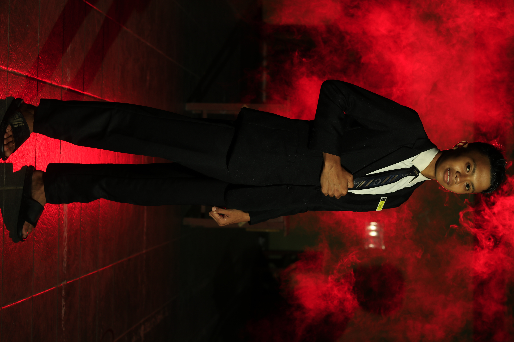
التّواضع أسمى الأخلاقالاسم: حبيب فواد هدايات
الفصل: 5-J
اللّغة: العربيّةبسم الله مشاء الله
بسم الله فتح القرآن الكريم
بسم الله قرأ القرآن العظيم
بسم الله الرّحمن الرّحيمقال رسول الله صلّى الله عليه وسلّم:
"لايؤمن أحدكم حتّى تؤمن ولا تؤمن حتّى تحاب أوّل أدلّكم شيئا أذا فعلتموهم أفشوا السّلام بينكم."أحيّكم تحيّة إسلاميّة، تحيّة محبّة، تحيّو لا يفوته الزّمان، واشترك بالسلام. السّلام على من تبع الهدى، السّلام من عند الله واهتدى، السّلام تتبع ملقية رائحة الرّيحان.
السّلام عليكم ورحمة الله وبركاته.الحمد لله الّذي جعل الشّهر المحرّم غرّة للعام وأجزل فيه فضائل أيّامه على سائر الأيّام، وخصّة على سائر الشّهور بمزيده، من فضائل والإتمام وأمر نهاره بالصّيام ونوّر ليله بالقيام، أحمده واشكره على إحسانه العام و أشهد أن لا إله إلّا الله وحده رشريك له المترد بالكمال والتّام، و أشهد أنّ محمّدا عبده ورسوله أفضل من صلّى وصام وأنقى من تهجّد وفام، أمّا بعده.
ايها الاخوة
حبا عللينا أن نشكر الله عزوجل ،لماذ وجب علينا أن نشكر لأن قد بين في الاية القرأن العظيم ماذا؟ قل لو كان البحر مداد اللكلما ربه لتقد البحر قبل ابا قد كلمالت ربه ولو حينا لمثله مددا لذالك وجب علينا أن نشكر الله الذي وهبنا أيايا و أياكم النعم والبركات حتى نستتيع نجتمع في هاذا المكان المبارك.صلاة وسلاما دائمين متلازمين إلى الخاتم الأنبياء المرسلين ولقب بالآمين وهو محمّد صلّى الله عليه وسلّم. والحمد لله نحن من مضلّين ونطعم المسكين ولا نكذّب إلّا بيوم الدّين.
وأشكر شكرا إلى رئيس الجلسة الّذي قد أعطني فرصة غالية بأن أتكلّم أمامكم جميعا تحت الموضوع/بشير العنوات:
التّواضع أسمى الأخلاقوجب علينا قي كلّ أمورنا في كلّ وقتنا بأن نتواضع. لماذا؟ لأنّ التّواضع من مجامع المكارم الأخلاق وضدّه التكبّر وهو من مجامع مساوئ الأخلاق والتّواضع أهمّ طرق إكتساب الحكمة والصّوّاب في الأقوال والأفعال واعلموا أيّها الإخوة أنّ التّواضع يؤدّي إلى المودّة والمحبّة كما يجعل لساننا مرتحا ومنشرحا.
والعاقل يعلم أنّ تكبّر يؤدّي إلى لكراهيّة و قال الله تعالى في القرآن الكريم:
"ولا تصعّر خدّك لناس ولا تمش في الأرض مرحا إنّ الله لا يحبّ كلّ مختال فخور" (لقمان :18)أي ولا تمل وجهك عن النّاس إذا كلّمك أو كلّمتهم إحتقارا منك وستكبار عليهم ولا تمش قي الأرض بين النّاس محتالا ومتبخبرا ومتكبّرا. لأنّ الله لايحبّ كلّ متكبّر متباه قي نفسه وهيئته.
وقال رسول الله صلّى الله عليه وسلّم:
"من تعظّم في نفسه أو اختال في المشيئة لقي الله وهو عليه غضبان" (رواه أحمد)قد إتّضح لنا ممّا ورد أنّ التكبّر من الحصال المذمومة الّتي كره الله صاحبة وذم فاعله والمتكبّر سوف يلقي بالله وهو في شدّة الغضب.
وقال في أحمد الشّعار:
"تواضع تكن كالنّجم لاح لناظر على صفحات الماء وهو رفيع، ولا تكن كالدّخان يعلو بنفسه على طبقات الماء وهو وضيع."فمثل المتواضع كمثل النّجم رأى النّاس صورة النّجم على صفحات الماء ولكن هو عال في السّماء وليس كالمتكبّر يعجب نفسه بنفسه كما يعجب أهل الدّخان للدّخائرها يدعي مكانة منصبة عالية ولكن قي الحقيقة وضيع كالنّار على الأرض فسيحة.
إخواني في العقيدة سن النّار.
التّاضع من الصفات المحمودة وإذا أردنا وصيلة في حياتنا فعليها أن تصف لما يصف النّجم المتواضع لابه لايعاشر صاحبه الأغنياء أو الفقراء الجاهلين أم الماهرين بل عكس علينا أن نبتعد عن صفة التكبّر لا به يصرونا ويصلونا في الدّنيا والآخرة وإذا عرف جميع النّاس قد لمهم فيوسط أمورهم لأنّ خير الأمور أوساطها.والسّلام عليكم ورحمة الله وبركاته.
' >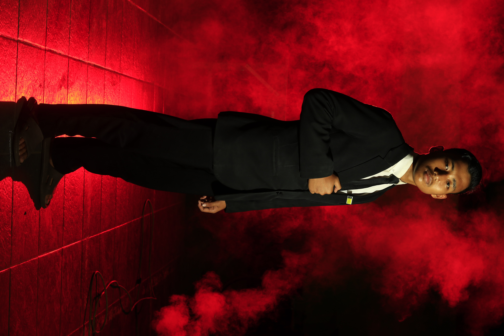
صِبْغَةُ المُسْلِمِيْنَالاسم: وحيو دوي
الفصل: 5-J
اللّغة: العربيّةقم يا جيش السّباب، إلى الأمام نحو القيام، الشّباب كالحشام، لا تنم. هاؤلاء جندنا هم أعمال الدّنيا هم رجال السّلم نعم نعم.
سيّدنا الكرام وؤساء معهد دار السّلام
المكرّم الأساتدة المشرفون
ويا أيّها الحفل الكريمبسم الله الرّحمن الرّحيم
السّلام عليكم ورحمة الله وبركاتهالحمد لله الّذي بنعمته شمّ صالح وجعل الأرض فرارا السّبع السّماوات وجعل فيها أنهارا والجبال راضيت، تحمده تبارك وتعالى وكمال الصفات الصّلاة والسّلام. فلو لو و لو لو ثمّ لو لو و لو لو؟
فعن عن وعن عن ثمّ عن عن وعن عن تساعل كلّ من سار وارتحل، و في في وفي في اجتمعى السلمى أقبل لم أعمل، وسل سل وسل سل ثمّ سل سل وسل سل وسل دنى دار السّلام والرّجوعة فكم عسل، فحي حي وحي حي ثمّ حي حي وحي حي وحي متا لي من الدّنيا من النّاس في الجمل.
أنا وحي ولد جميلة قلنسوته قائم بين أيديكم جميعا بالخطابة تحت العنوات:
صبغة المسلمينلقد مررة القرون في هذه الدّنيا عاشت فيها كثير من المخلوقات، وخلق الله الإنسان بالهوى يكون خليفة في هذه الدّنيا الفانيّة، أليس كذلك؟ وكان الملائكة يتسائلون إلى الله كما قال الله تعالى في القرآن الكريم:
بسم الله الرّحمن الرّحيم
"وإذ قال ربّك للملائكة إنّي جاعل في الأرض خليفة، قالوا أتجعلوا فيها من يفسد فيها ويسفق الدّماء ونحن نسبّح بحمدك ونقدّس لك، قال إنّي أعلم ما لا تعلمون."والله أن الله صادق بالنّاس يكون خليفة في هذه الدّنيا، ولكن ماذا يحدث في هذه الدّنيا؟ بعد سنوات كثيرة كان النّاس ما يل في تدبير الدّنيا، يفعلون ما شاء ويعملون بالهوى النّساء ترجات والرّجل تأنّست والأطفال بعلوفهم يتركون الأدب، يتركون الأخلاق، ويتركون العبادة. فأين وجود المسلمين الّذي قيل.... أنّهم قائمون بالأدب، قائمون بالأخلاق، وقائمون بالعبادة. فإذا المسلمون يطبعون الكافرين، يتركون عبادتهم وينسون ربّهم.
الحمد لله نحن الآن ساكن في هذا المعهد الشّريف دار السّلام كونتور ما زلنا حافظ عن صبغة الإسلام. فلا بدّ لنا أن نجتهد في طلب العلم، لماذا؟ لأنّنا نستطيع أن نصلح هذه الدّنيا بالعلوم والعقيدة. الدّنيا تحتجنا من كلّ جهة، ونحفظ عن نتائج الإسلام وكما سمعنا مرارا من شيخ معهدنا.
المحافظة على القيام والتّغيير إلى الكمال
أحبّة في الله، الحمد لله قد أتينا إلى آخر الخطابة. شكرا على حسن ملاحظتكظ وأرجوكم بالتّوفيق والنّجاح. أخيرا منّي لست من قسم الأمن الّذي له الهيبة، ولست من قسم إحياء اللغة الّذي له اللغة المرتفعة، ولست من قسم الإعلام الّذي له المقدّمة الجيّدة، وما أنا إلّا نوروير وحي الّذي يستعمل القلنسوة.
والسّلام عليكم مرحمة الله وبركاته.
' >-Maps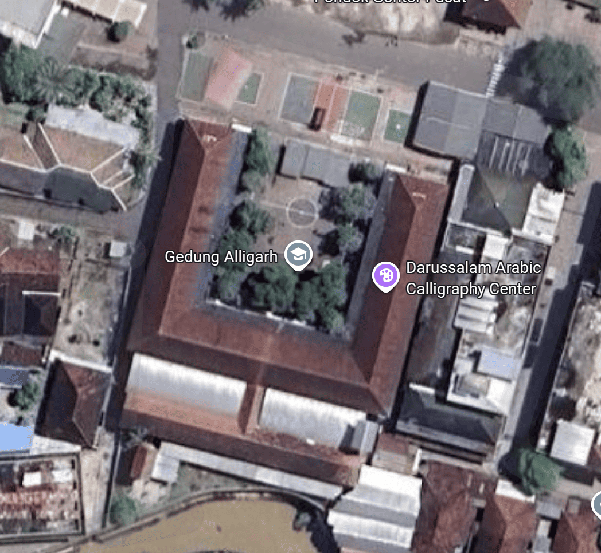
Gedung Olahraga Pondok Modern Darussalam GontorPetunjuk Ke Lokasi-Sisa Momen00Hari00Jam00Menit00DetikWaktu semakin dekat! Jangan lewatkan momen spesial ini. Mari bergabung bersama kami dalam acara Public Speaking Contest ini.-Tanda KasihTerima kasih telah meluangkan waktu membaca guidebook ini.
Untuk kenyamanan Anda, silakan unduh guidebook melalui tombol di bawah.
Jangan lupa juga untuk berpartisipasi dan tunjukkan semangat Anda dengan menggunakan Twibbon resmi kami melalui tombol di bawah!-Merupakan kebahagiaan dan kehormatan bagi kami, apabila Anda berkenan hadir dan menikmati rangkaian acara Public Speaking Contest ini bersama kami.Hormat Kami panitia- Beranda
- Deskripsi
- Logo
- Vocal Group
- Lokasi
- Sisa Waktu
- Unduh
- Thanks
NamaNama TamuMusic:Akankah Dunia RelaJangan Bikin Aku Sedih
Kamu didapati mencoba menghapus watermark secara ilegal.
Pemberitahuan
Browser yang kamu gunakan mungkin kurang kompatibel. Beberapa fungsi undangan ini mungkin tidak dapat berjalan dengan baik. Kami merekomendasikan Chrome. Klik tombol dibawah ini untuk mendownload.

 ×
×